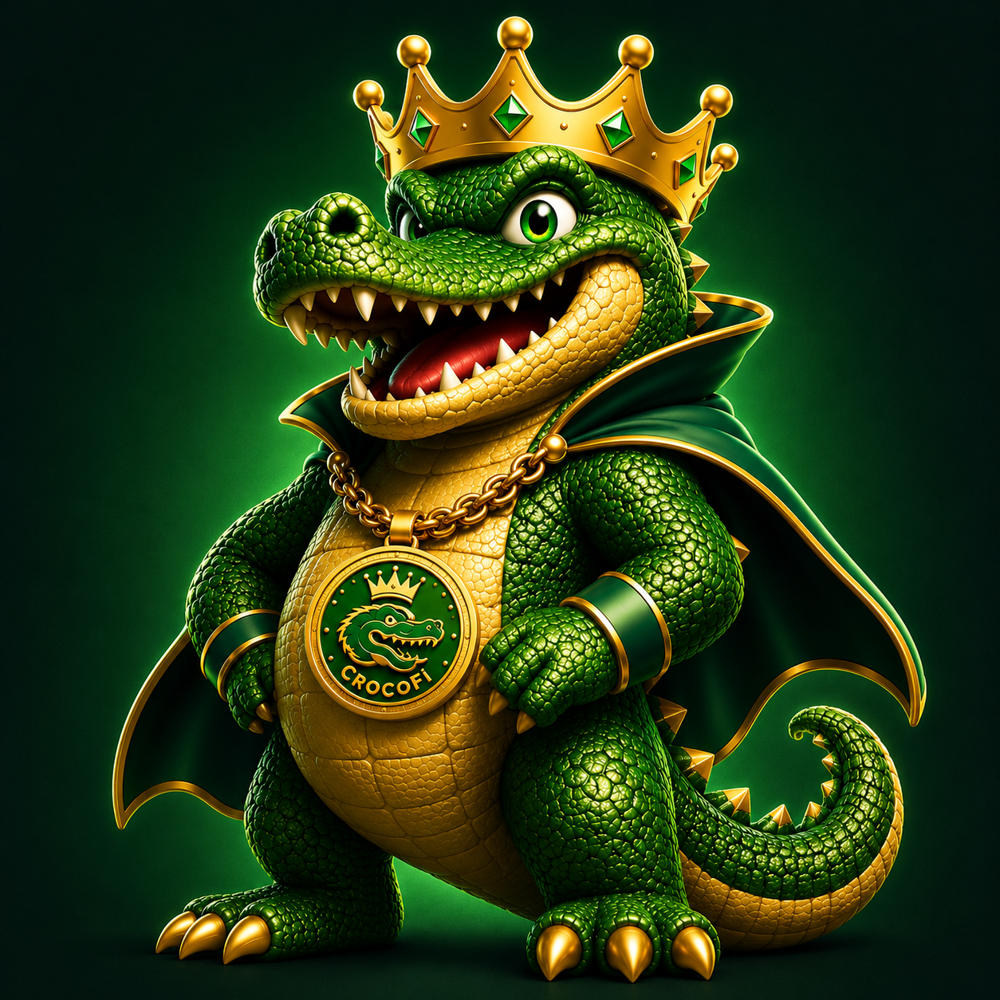

Blockchain
Solana
Fast. Efficient. Scalable.
Entering the Kingdom...
CrocoFi is more than a token. It's a community, a brand, and a kingdom built for those who believe great things are created with patience, vision, and unity. Built on Solana, CrocoFi empowers its community to shape the future together.

Build with patience. Rule with purpose.
CrocoFi was created to build more than a token—it was created to build a community, a recognizable brand, and a kingdom where every member helps shape its future. Inspired by the resilience, patience, and strength of the crocodile, CrocoFi stands for strategic thinking, unwavering determination, and long-term vision. Built on the Solana ecosystem, it embraces speed, innovation, and transparency while focusing on sustainable growth rather than short-lived hype.
The Swamp is our Kingdom. The Community is our Strength. The Future is ours to build.
CrocoFi believes that lasting projects are built by people who share a common vision. Every member helps shape the future of the Kingdom.
Built with patience. Powered by community. Driven by vision. These principles define everything we build.
CrocoFi isn't built for hype. It's built for those who believe great kingdoms are created with patience, community, and vision.
Every great kingdom is built by its people. CrocoFi grows through the passion and commitment of its community.
Powered by the Solana ecosystem, CrocoFi embraces speed, efficiency, and innovation.
CrocoFi is designed to be more than a cryptocurrency. It is a recognizable brand built with consistency, quality, and purpose.
Our focus is on building a lasting community and a meaningful ecosystem rather than chasing short-term trends.
Always use the official CrocoFi resources below. Verify the contract address before interacting with the project.
Transparency is the foundation of every lasting kingdom. Below is the verified information about CrocoFi.
Fast. Efficient. Scalable.
The official CrocoFi token.
Everyone is welcome to enter the Kingdom.
Built with patience. Powered by Community.
CrocoFi believes in transparency. Information presented on this website reflects official project details. As the ecosystem evolves, additional verified information will be published through CrocoFi's official channels.
Every lasting kingdom is built step by step. CrocoFi's roadmap represents our commitment to continuous growth, transparency, and community.
Every kingdom begins with a vision.
A kingdom is built one citizen at a time.
Strong kingdoms are built with patience.
The journey never ends for those who keep building.
Great kingdoms are not built by one ruler alone. They are built by people who believe in the same vision. Become part of the CrocoFi Kingdom and help shape its future.
Join the Kingdom. Meet the community. Stay connected.
Follow our latest announcements, updates and Kingdom news.
Join CrocoFi on Pump.fun and become part of the journey.
"The strongest kingdoms are built by those who never stop believing."
Everything you need to know before entering the Kingdom.
CrocoFi is more than a token. It is a community, a recognizable brand, and a kingdom built on the Solana ecosystem for people who believe in patience, vision and long-term growth.
CrocoFi is built on the Solana blockchain, known for its speed, scalability and efficiency.
You can purchase CROFI through our official Pump.fun page linked throughout this website.
Join our official Telegram community and follow CrocoFi on X to stay updated with announcements and future developments.
CrocoFi aims to build a recognizable, community-driven brand that grows through transparency, creativity and long-term vision.